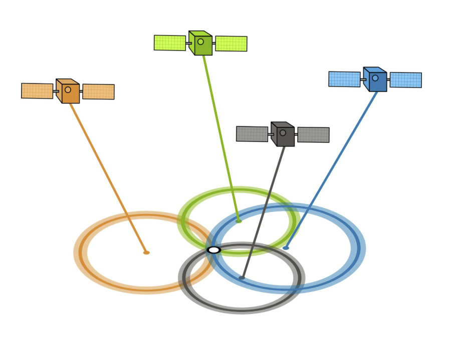
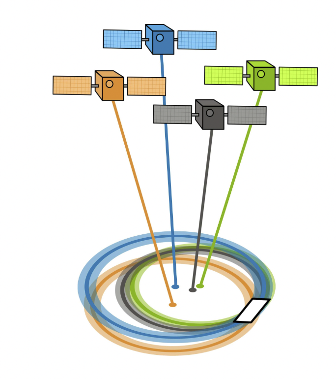
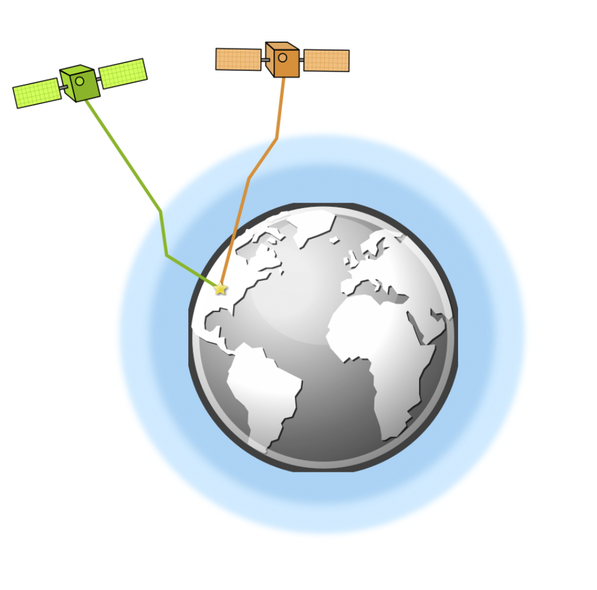
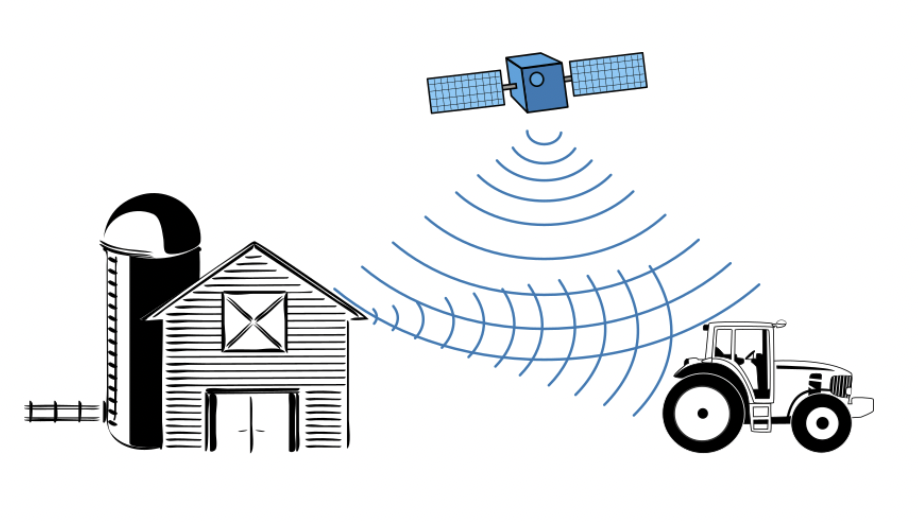

دقت GPS: DOP، چندمسیره و منابع خطا
GPS چقدر دقیق است؟
یک گیرنده GPS با طراحی مناسب میتواند به دقت افقی ۳ متر یا بهتر و دقت ارتفاعی ۵ متر یا بهتر (در ۹۵٪ مواقع) برسد. با سامانههای تقویتی، دقت زیر یک متر نیز ممکن است. با این حال، چندین منبع خطا میتوانند این دقت را کاهش دهند.
مهمترین منابع خطا در GPS
- هندسه ماهوارهها (DOP)
- اثرات جوی (یونسفر، تروپوسفر)
- چندمسیره (بازتاب سیگنال)
- خطاهای ساعت و اپمریس ماهواره
- نویز گیرنده و محیط اطراف
هندسه ماهوارهها: DOP
GDOP (تضعیف هندسی دقت) و PDOP (تضعیف دقت موقعیت) خطایی را توصیف میکنند که ناشی از آرایش نسبی ماهوارههای GPS است. هرچه ماهوارهها در آسمان پراکندهتر باشند، DOP کمتر و دقت موقعیتیابی بیشتر است.
وقتی ماهوارهها پراکندگی خوبی دارند، DOP پایین و دقت بالا است.
وقتی ماهوارهها نزدیک به هم هستند، DOP بالا و دقت پایین است.
شکست جوی
تروپوسفر و یونسفر میتوانند سرعت سیگنالهای GPS را تغییر دهند و باعث شکست شوند. این پدیده میتواند تا ۵ متر خطا ایجاد کند. استفاده از GPS دوفرکانسه این خطا را به حداقل میرساند.
اثر چندمسیره
چندمسیره زمانی رخ میدهد که سیگنال GPS از سطوح اطراف (مانند ساختمان یا کوه) بازتاب پیدا کند و گیرنده همان سیگنال را با تاخیر دریافت کند. این پدیده میتواند حدود ۱ متر خطا ایجاد کند.
زمان و موقعیت ماهواره (اپمریس)
دقت ساعت اتمی ماهواره GPS حدود یک نانوثانیه است. خطاهای کوچک در زمان یا اپمریس ماهواره میتواند چند متر خطا در موقعیت نهایی ایجاد کند.
تثلیث GPS و خطای اپمریس
گیرنده GPS با تثلیث سیگنالهای زمانی ماهوارهها موقعیت را تعیین میکند. اگر موقعیت ماهواره (اپمریس) دقیق نباشد، خطای اضافی وارد میشود.

جمعبندی و توصیههای عملی
- مقادیر DOP را پایش کنید و برای اندازهگیریهای حساس، از بازههای DOP بالا اجتناب کنید.
- برای دقت بالاتر از GPS دوفرکانسه یا سامانههای تقویتی استفاده کنید.
- از محیطهای چندمسیره (مانند کنار ساختمانها) دوری کنید؛ آسمان باز بهترین است.
- به شرایط جوی و سلامت ماهوارهها توجه داشته باشید.